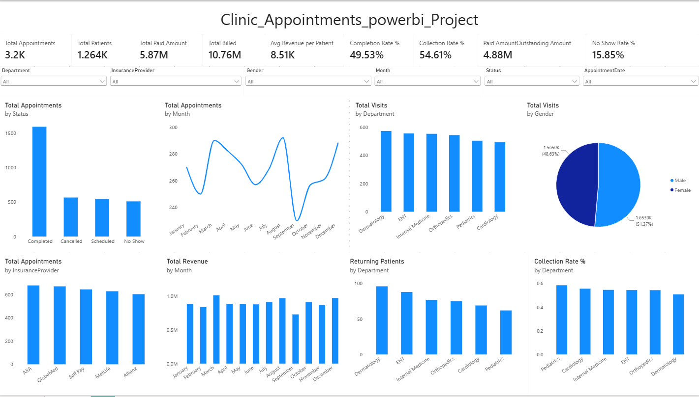
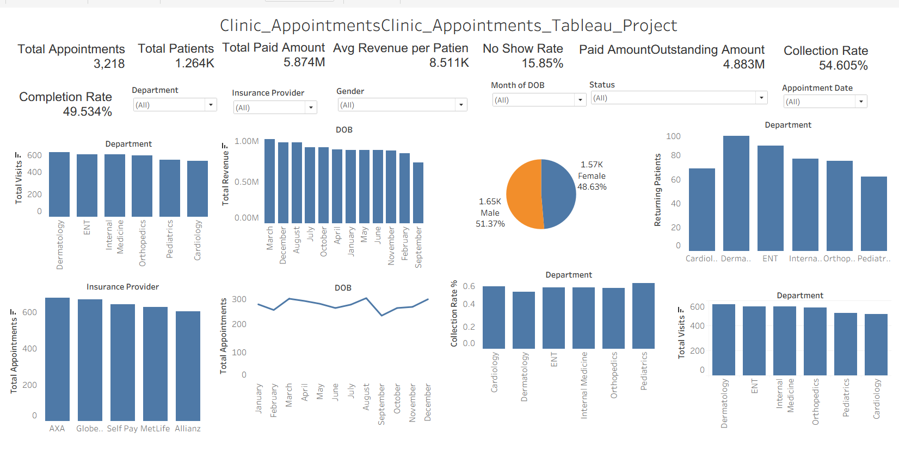

Clinic Appointments Analysis Dashboard
Healthcare Analytics Project using Python, SQL, Tableau and Power BI
Power BI Dashboard

📊 View Power BI Dashboard
Tableau Dashboard

📈 View Tableau Dashboard
Project Files
📁 Download Project Files
Project Overview
- Total Appointments: 3,218
- Total Patients: 1,264
- Total Paid Amount: 5.874M
- Total Billed Amount: 10.76M
- Average Revenue per Patient: 8.511K
- Collection Rate: 54.61%
- No Show Rate: 15.85%
- Completion Rate: 49.53%
Key Insights
- Dermatology recorded the highest number of visits.
- AXA generated the highest appointment volume among insurance providers.
- Male patients represented 51.37% of total visits.
- Revenue remained relatively stable throughout the year.
Business Recommendations
- Reduce no-show rates through automated appointment reminders.
- Focus on improving collections for unpaid billing balances.
- Expand capacity in high-demand specialties such as Dermatology.
- Strengthen partnerships with top-performing insurance providers.
- Monitor appointment completion trends to improve operational efficiency.
Tools Used
- Python
- SQL
- Power BI
- Tableau
- DAX
- Power Query
- Excel